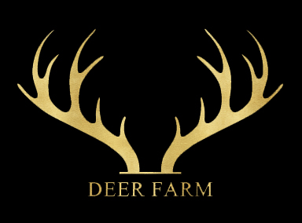

2017년 8월 26일 열렸던 프리티리듬 온리전 프리즘파티에서 배포한
꿈의 라이브 프리즘스톤 동인게임 프리즘 팡을 공개합니다.
PC Version DownLoad
Android Version DownLoad
Credit
Animation : MintPomPom
BackGroundDesign : EBOY
GameObjectDesign : AKINA/MintPomPom
GameDesign/Progrmming : b0000000
Sound : BeggarPrince
TitleIllustation : Mao
UI : Moran
E-MAIL : bzerox7@gmail.com